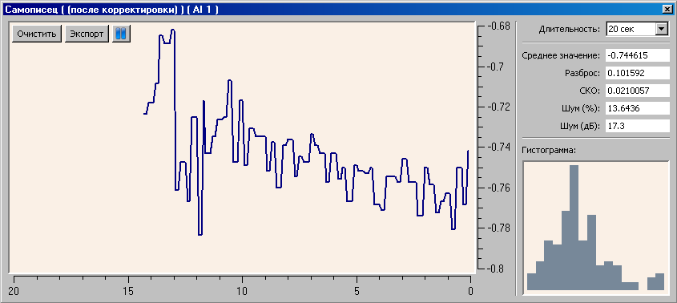
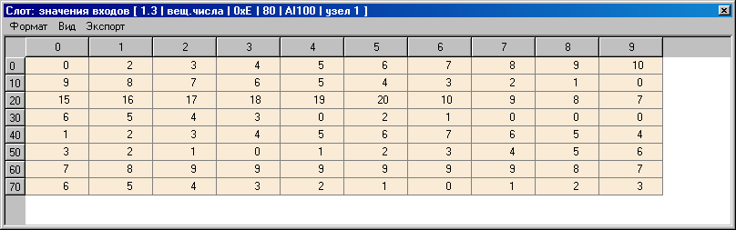
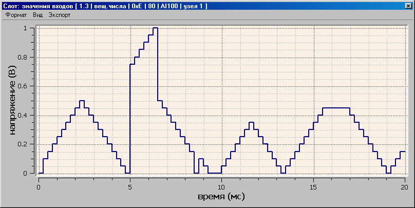
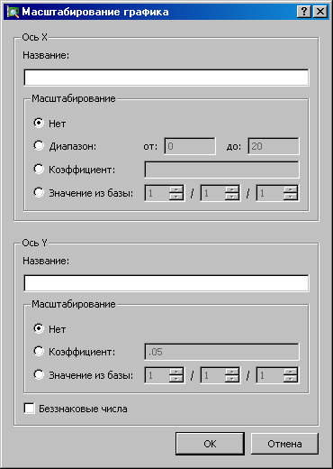

Работа с проектом подразумевает отображение и управление параметрами информационной базы МК в режиме реального времени. Для начала работы с проектом нужно вызвать меню > .
После вызова меню > , привязанные ячейки таблицы будут содержать числовые значения, соответствующие текущим параметрам в информационной базе МК.
Значение *** показывает, что MKStudio не может получить нужный параметр из МК. Это происходит в следующих случаях:
Для управления (записи) параметром нужно нажать на соответствующий ячейке левой кнопкой мыши (или нажать клавишу Enter) и ввести требуемое число. Если ячейка представляет собой перечислитель, то появляется всплывающее меню, в котором нужно выбрать требуемое значение.
Возможно записать значения одновременно в несколько ячеек. Для этого нужно выделить область ячеек и в одну из них записать значение. Это значение запишется во все выделенные ячейки.
Особенности интерфейса при управлении параметрами:
Управление никак не связанно с отображением. Это значит, что когда записанное значение отображается на экране - это гарантирует то, что оно записалось в МК. Если записанное значение не отображается - это значит, что:
Нажатием правой кнопки мыши на привязанные ячейки таблицы можно вызвать окно самописца. В нем будет показан график изменения значения этой ячейки во времени.

Здесь доступно следующее управление окном:
Информационные поля:
| Название поля | Описание |
|---|---|
| Среднее значение | Усредненное по всему временному промежутку значение данных. |
| Разброс | Максимальное значение на графике минус минимальное значение данных. |
| СКО | Среднеквадратическое отклонение. Квадратный корень из дисперсии данных. |
| Шум (%) | Отношение Разброса к Среднему значению в процентах. |
| Шум (дБ) | Логарифм отношения Разброса к Среднему значению. Формула расчета: -20*log10((y_max - y_min)/y_average) |
| Гистограмма | Диаграмма, показывающая статистическую плотность распределения данных. Служит для оценки случайного сигнала (шума). По горизонтальной оси - отклонения данных от среднего значения. По вертикальной оси - количество точек данных, попавших в область данного отклонения. |

Окно представляет собой таблицу со значениями всех параметров слота. Вызвать его можно двойным нажатием левой кнопки мыши на нужном слоте в окне Взаимодействие с МК.
С помощью меню можно переключать тип отображения слота: таблица значений, график или масштабированный график. В меню можно задать формат отображения (десятичный знаковый, десятичный беззнаковый, шестнадцатеричный, двоичный).
В таблице значений представленны все значения параметров этого слота слева-направо сверху-вниз. По сути эта таблица ничем не отличается от центральной таблицы главного окна и все возможности по отображению (самописец) и управлению поддерживаются.
График слота представляет собой график, в котором по горизонтальной оси положен номер параметра в слоте, а по вертикальной оси - значение этого параметра.
График слота масштабированный отличается от просто графика тем, что для него можно задать произвольное масштабирование по обоим осям. Это делается при помощи меню > .

При нажатии меню данные копируются в буфер обмена.
Все настройки отображения и масштабирования сохраняются в файл проекта при записи проекта.
Диалог вызывается при помощи меню > .

При задании масштабирования в виде коэффициент масштабирования берется из базы данных модуля в режиме реального времени. Значение в базе адресуется номером модуля, номером слота и номером параметра.